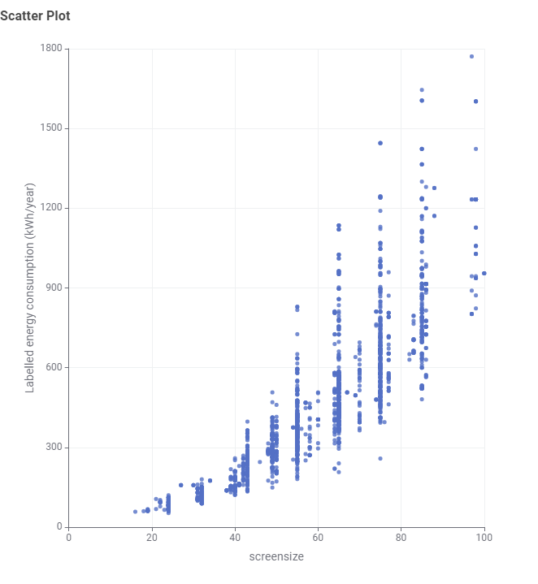
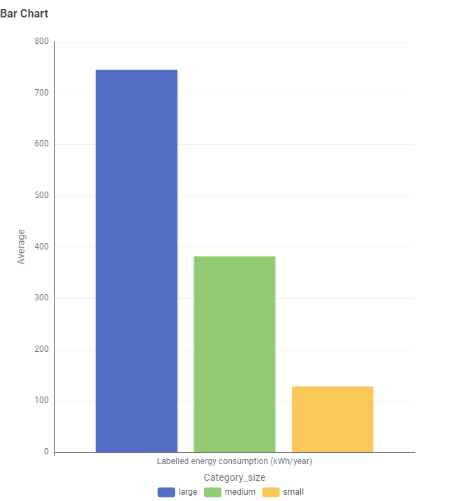
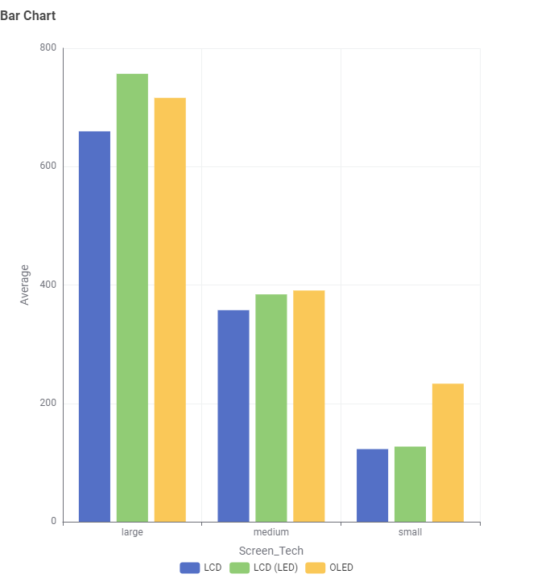

Screen Size
Screen size is one of the main features consumers consider when purchasing a television. Larger screens provide a different viewing experience, but they may also require more energy to operate.
Television Energy Data Story
Television buyers often focus on screen size, picture quality and price when choosing a new TV. However, screen size may also affect how much electricity a television uses.
This data story explores the relationship between television screen size and labelled energy consumption to help consumers better understand the energy impact of choosing a larger TV.
Explore the DataThe Problem
A television may be used for several hours every day, meaning its electricity consumption can contribute to household energy use over time. Understanding how different television characteristics relate to energy consumption can help consumers make more informed purchasing decisions.
Screen size is one of the main features consumers consider when purchasing a television. Larger screens provide a different viewing experience, but they may also require more energy to operate.
Labelled energy consumption provides an estimate of how much electricity a television uses. Comparing this value between models can help consumers understand differences in energy use.
Consumers can use energy information together with screen size, price and other features when deciding which television best suits their needs.
Finding 01

The scatter plot compares television screen size with labelled energy consumption. The overall pattern shows that televisions with larger screens generally consume more energy than televisions with smaller screens.
There is still variation between individual television models. TVs with similar screen sizes do not always have exactly the same energy consumption, which suggests that screen size is not the only factor affecting energy use.
Making the Data Easier to Understand
The original dataset recorded television screen size in centimetres. However, television sizes are commonly described in inches when products are advertised and purchased. To make the visualisation easier for consumers to understand, the screen-size values were converted from centimetres to inches using an Expression node in KNIME.
Screen size recorded in centimetres
Screen size converted from centimetres to inches
TVs grouped into Small, Medium and Large categories
Finding 02

To simplify the comparison, televisions were grouped into three screen-size categories: small, medium and large. The average labelled energy consumption was then calculated for each category.
This comparison makes the general relationship clearer: larger screen-size categories tend to have higher average energy consumption.
A larger television may provide a bigger viewing experience, but consumers should also consider the additional energy consumption associated with larger screen sizes.
Another Factor
Screen size is not the only characteristic that may relate to television energy consumption. The dataset also contains information about screen technology, including LCD, LCD (LED) and OLED televisions.
Exercise 2 also explored television screen technology. OLED televisions appeared to have a larger average screen size than LCD and LCD (LED) televisions. Because larger televisions generally consume more energy, comparing screen technologies without considering screen size could be misleading. Grouping televisions by both screen technology and size category provides a fairer comparison.

What Should Consumers Take Away?
The analysis shows a general relationship between television screen size and labelled energy consumption. Consumers who want to reduce electricity use should consider whether they need a larger television and compare the energy information of models with similar screen sizes before making a purchase.
Read With Context
This analysis is based on the televisions contained in the provided dataset and may not represent every television currently available in the Australian market.
Some unusual screen-size values were identified during exploration of the dataset. These values should be checked against model information before drawing conclusions from individual records.
Labelled energy consumption provides a useful basis for comparison, but actual household electricity use may vary depending on viewing time, television settings and individual usage behaviour.